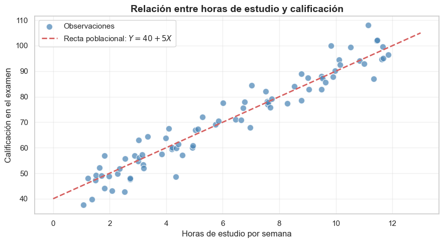
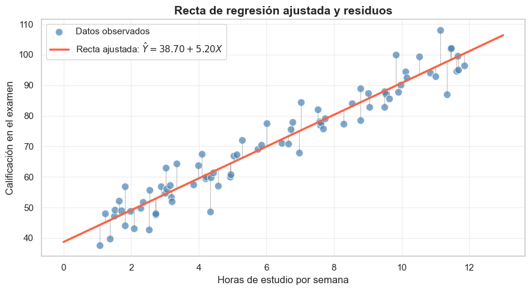
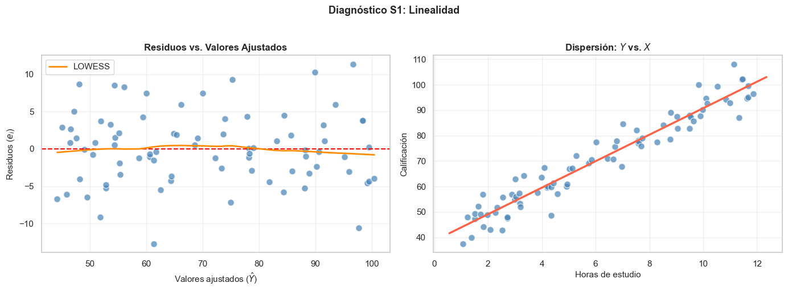
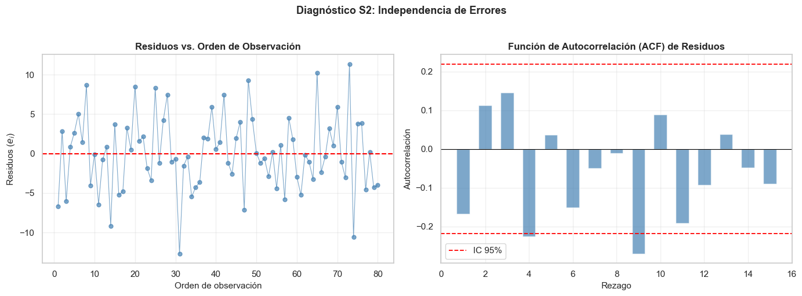
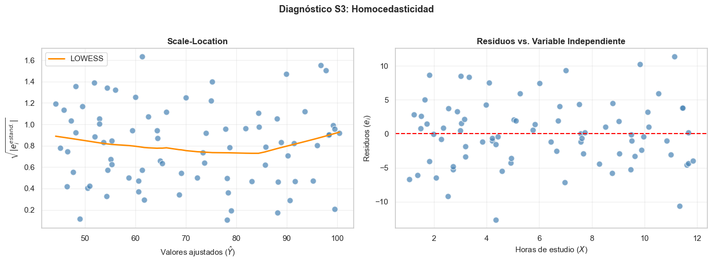
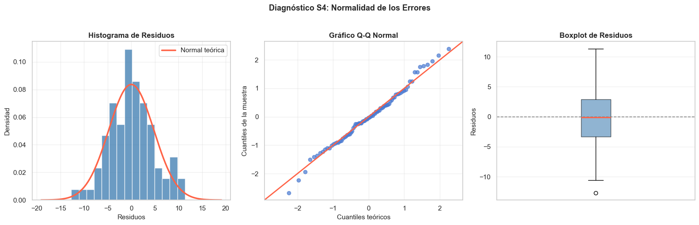
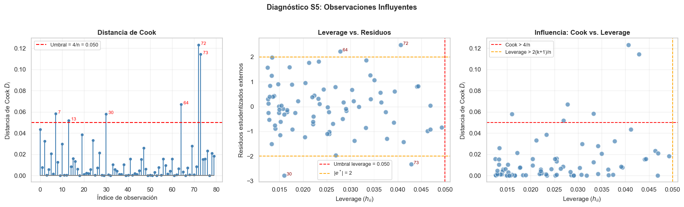
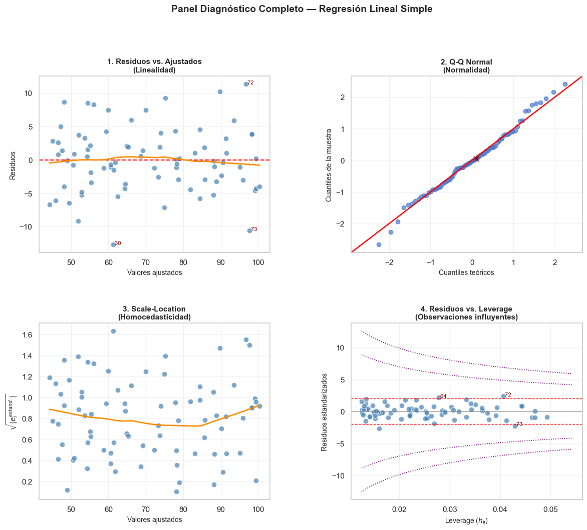

Regresión Lineal Simple: Modelo, Estimación y Verificación de Supuestos#
La regresión lineal simple es uno de los modelos estadísticos más fundamentales y ampliamente utilizados. Permite modelar la relación entre una variable dependiente \(Y\) y una sola variable independiente \(X\), asumiendo que dicha relación es lineal.
En este cuaderno estudiaremos:
El modelo de regresión lineal simple y su formulación matemática
La estimación de parámetros por Mínimos Cuadrados Ordinarios (MCO)
Los 5 supuestos clásicos que deben comprobarse
Cómo verificar cada supuesto con pruebas estadísticas y gráficos diagnósticos
Nota: La validez de las inferencias (pruebas de hipótesis, intervalos de confianza) depende del cumplimiento de los supuestos. Verificarlos siempre es una buena práctica.
[1]:
# Importación de librerías
import numpy as np
import pandas as pd
import matplotlib.pyplot as plt
import matplotlib.gridspec as gridspec
import seaborn as sns
import statsmodels.api as sm
import statsmodels.formula.api as smf
from statsmodels.stats.diagnostic import het_breuschpagan, het_white
from statsmodels.stats.stattools import durbin_watson
from statsmodels.graphics.gofplots import ProbPlot
from scipy import stats
from scipy.stats import shapiro, kstest
# Configuración de gráficos
plt.rcParams['figure.figsize'] = (10, 6)
plt.rcParams['axes.grid'] = True
plt.rcParams['grid.alpha'] = 0.3
sns.set_theme(style="whitegrid", palette="muted")
print("Librerías cargadas correctamente ✓")
Librerías cargadas correctamente ✓
1. El Modelo de Regresión Lineal Simple#
El modelo de regresión lineal simple postula que la variable dependiente \(Y\) se relaciona con la variable independiente \(X\) mediante:
Donde:
Símbolo |
Descripción |
|---|---|
\(Y_i\) |
Valor observado de la variable dependiente para la observación \(i\) |
\(X_i\) |
Valor observado de la variable independiente para la observación \(i\) |
\(\beta_0\) |
Intercepto: valor esperado de \(Y\) cuando \(X = 0\) |
\(\beta_1\) |
Pendiente: cambio esperado en \(Y\) por cada unidad de aumento en \(X\) |
\(\varepsilon_i\) |
Error aleatorio o perturbación estocástica de la observación \(i\) |
Interpretación geométrica#
La recta de regresión \(\hat{Y} = \hat{\beta}_0 + \hat{\beta}_1 X\) es la línea que «mejor se ajusta» a la nube de puntos \((X_i, Y_i)\).
El residuo de cada observación es: \(e_i = Y_i - \hat{Y}_i\)
El error \(\varepsilon_i\) es la desviación real (no observable) del punto respecto a la recta poblacional
El residuo \(e_i\) es el estimador observable de \(\varepsilon_i\)
La recta de regresión poblacional vs. muestral#
2. Ejemplo Práctico: Datos de Estudio y Calificación#
Para ilustrar el modelo, usaremos un conjunto de datos simulado que relaciona:
:math:`X`: Horas de estudio por semana
:math:`Y`: Calificación en el examen (sobre 100)
Los datos se generan con una relación lineal verdadera \(Y = 40 + 5X + \varepsilon\), donde \(\varepsilon \sim N(0, 5^2)\).
[2]:
# Generación del conjunto de datos
np.random.seed(42)
n = 80
# Variable independiente: horas de estudio (entre 1 y 12)
X = np.random.uniform(1, 12, n)
# Parámetros poblacionales verdaderos
beta_0_real = 40
beta_1_real = 5
sigma_real = 5
# Variable dependiente con error normal
epsilon = np.random.normal(0, sigma_real, n)
Y = beta_0_real + beta_1_real * X + epsilon
# DataFrame
df = pd.DataFrame({'horas_estudio': X, 'calificacion': Y})
df = df.sort_values('horas_estudio').reset_index(drop=True)
print(f"Tamaño muestral: n = {n}")
print(f"\nEstadísticas descriptivas:")
print(df.describe().round(2))
Tamaño muestral: n = 80
Estadísticas descriptivas:
horas_estudio calificacion
count 80.00 80.00
mean 6.12 70.58
std 3.36 18.14
min 1.06 37.55
25% 3.03 55.95
50% 5.80 69.85
75% 9.16 85.96
max 11.86 108.02
[3]:
# Diagrama de dispersión de los datos
fig, ax = plt.subplots(figsize=(9, 5))
ax.scatter(df['horas_estudio'], df['calificacion'],
color='steelblue', alpha=0.7, edgecolors='white', s=80, label='Observaciones')
# Recta poblacional verdadera
x_range = np.linspace(0, 13, 200)
ax.plot(x_range, beta_0_real + beta_1_real * x_range,
'r--', linewidth=2, label=f'Recta poblacional: $Y = {beta_0_real} + {beta_1_real}X$')
ax.set_xlabel('Horas de estudio por semana', fontsize=12)
ax.set_ylabel('Calificación en el examen', fontsize=12)
ax.set_title('Relación entre horas de estudio y calificación', fontsize=14, fontweight='bold')
ax.legend(fontsize=11)
plt.tight_layout()
plt.show()

3. Estimación por Mínimos Cuadrados Ordinarios (MCO)#
Principio#
MCO busca los estimadores \(\hat{\beta}_0\) y \(\hat{\beta}_1\) que minimizan la suma de cuadrados de los residuos (SCE):
Fórmulas cerradas#
Derivando la SCE e igualando a cero se obtienen las ecuaciones normales, cuya solución es:
Estimación de la varianza del error#
La varianza del error \(\sigma^2 = \text{Var}(\varepsilon_i)\) se estima con el cuadrado medio del error (CME):
Se divide entre \(n-2\) porque se estiman 2 parámetros (\(\beta_0\) y \(\beta_1\)), perdiendo 2 grados de libertad.
[4]:
# ── Estimación manual de MCO ──────────────────────────────────────────────
X_arr = df['horas_estudio'].values
Y_arr = df['calificacion'].values
X_mean = np.mean(X_arr)
Y_mean = np.mean(Y_arr)
Sxx = np.sum((X_arr - X_mean) ** 2)
Sxy = np.sum((X_arr - X_mean) * (Y_arr - Y_mean))
beta1_hat = Sxy / Sxx
beta0_hat = Y_mean - beta1_hat * X_mean
Y_hat = beta0_hat + beta1_hat * X_arr
residuos = Y_arr - Y_hat
SCE = np.sum(residuos ** 2)
s2 = SCE / (n - 2) # varianza estimada del error
s = np.sqrt(s2) # desviación estándar del error (error estándar de la regresión)
print("=" * 45)
print(" Estimación MCO (cálculo manual)")
print("=" * 45)
print(f" β̂₀ (intercepto) = {beta0_hat:.4f}")
print(f" β̂₁ (pendiente) = {beta1_hat:.4f}")
print(f" s² (var. error) = {s2:.4f}")
print(f" s (err. estándar) = {s:.4f}")
print("=" * 45)
print(f"\n Valores reales: β₀={beta_0_real}, β₁={beta_1_real}, σ={sigma_real}")
=============================================
Estimación MCO (cálculo manual)
=============================================
β̂₀ (intercepto) = 38.7013
β̂₁ (pendiente) = 5.2043
s² (var. error) = 23.0418
s (err. estándar) = 4.8002
=============================================
Valores reales: β₀=40, β₁=5, σ=5
[5]:
# ── Estimación con statsmodels (reporte completo) ─────────────────────────
X_sm = sm.add_constant(df['horas_estudio']) # agrega columna de unos para β₀
modelo = sm.OLS(df['calificacion'], X_sm).fit()
print(modelo.summary())
# Guardamos resultados para los diagnósticos posteriores
fitted = modelo.fittedvalues
residuos = modelo.resid
OLS Regression Results
==============================================================================
Dep. Variable: calificacion R-squared: 0.931
Model: OLS Adj. R-squared: 0.930
Method: Least Squares F-statistic: 1050.
Date: Thu, 28 May 2026 Prob (F-statistic): 5.26e-47
Time: 10:27:26 Log-Likelihood: -237.99
No. Observations: 80 AIC: 480.0
Df Residuals: 78 BIC: 484.8
Df Model: 1
Covariance Type: nonrobust
=================================================================================
coef std err t P>|t| [0.025 0.975]
---------------------------------------------------------------------------------
const 38.7013 1.121 34.537 0.000 36.470 40.932
horas_estudio 5.2043 0.161 32.404 0.000 4.885 5.524
==============================================================================
Omnibus: 0.244 Durbin-Watson: 2.295
Prob(Omnibus): 0.885 Jarque-Bera (JB): 0.063
Skew: 0.067 Prob(JB): 0.969
Kurtosis: 3.034 Cond. No. 14.8
==============================================================================
Notes:
[1] Standard Errors assume that the covariance matrix of the errors is correctly specified.
[6]:
# ── Visualización de la recta ajustada ────────────────────────────────────
fig, ax = plt.subplots(figsize=(9, 5))
ax.scatter(df['horas_estudio'], df['calificacion'],
color='steelblue', alpha=0.7, edgecolors='white', s=80, label='Datos observados')
b0 = modelo.params['const']
b1 = modelo.params['horas_estudio']
x_plot = np.linspace(0, 13, 200)
ax.plot(x_plot, b0 + b1 * x_plot,
'tomato', linewidth=2.5,
label=f'Recta ajustada: $\\hat{{Y}} = {b0:.2f} + {b1:.2f}X$')
# Residuos (líneas verticales desde punto a recta)
for xi, yi, yhi in zip(df['horas_estudio'], df['calificacion'], fitted):
ax.plot([xi, xi], [yi, yhi], color='gray', linewidth=0.8, alpha=0.5)
ax.set_xlabel('Horas de estudio por semana', fontsize=12)
ax.set_ylabel('Calificación en el examen', fontsize=12)
ax.set_title('Recta de regresión ajustada y residuos', fontsize=14, fontweight='bold')
ax.legend(fontsize=11)
plt.tight_layout()
plt.show()

4. Los Supuestos del Modelo de Regresión Lineal Simple#
Para que los estimadores MCO sean válidos —tanto en términos de eficiencia como de inferencia— deben cumplirse los siguientes supuestos sobre el término de error \(\varepsilon_i\):
# |
Supuesto |
Notación |
|---|---|---|
S1 |
Linealidad del modelo en los parámetros |
\(E[\varepsilon_i] = 0\) |
S2 |
Independencia de los errores |
\(\text{Cov}(\varepsilon_i, \varepsilon_j) = 0, \; i \neq j\) |
S3 |
Homocedasticidad (varianza constante) |
\(\text{Var}(\varepsilon_i) = \sigma^2\) (constante) |
S4 |
Normalidad de los errores |
\(\varepsilon_i \sim N(0, \sigma^2)\) |
S5 |
Ausencia de observaciones influyentes |
No hay outliers que distorsionen la estimación |
Los supuestos S1–S3 son necesarios para el Teorema de Gauss-Markov (MCO = MELI: Mejor Estimador Lineal Insesgado).El supuesto S4 (normalidad) es adicional y necesario para realizar inferencia estadística (pruebas \(t\) e \(F\), intervalos de confianza).
A continuación verificaremos cada supuesto con gráficos diagnósticos y pruebas estadísticas formales.
Supuesto 1 — Linealidad#
Enunciado: La relación entre \(X\) e \(Y\) es lineal en los parámetros, es decir, \(E[Y|X] = \beta_0 + \beta_1 X\).
¿Qué implica? Los residuos deben distribuirse aleatoriamente alrededor de cero, sin ningún patrón sistemático en función de los valores ajustados.
Cómo verificarlo:
Gráfico de residuos vs. valores ajustados (\(e_i\) vs. \(\hat{Y}_i\)): si hay linealidad, los residuos deben estar dispersos aleatoriamente alrededor de la línea \(e=0\), sin formas curvilíneas.
Gráfico de dispersión (\(Y\) vs. \(X\)): inspección visual directa.
Señales de no linealidad:
Forma de «U» o arco en el gráfico de residuos
Tendencias sistemáticas crecientes o decrecientes en los residuos
Solución si se viola: Transformaciones de las variables (ej. \(\ln(X)\), \(X^2\)), o modelos no lineales.
[7]:
# ── S1: Verificación de Linealidad ────────────────────────────────────────
fig, axes = plt.subplots(1, 2, figsize=(14, 5))
b0 = modelo.params['const']
b1 = modelo.params['horas_estudio']
# Gráfico 1: residuos vs. valores ajustados
axes[0].scatter(fitted, residuos, color='steelblue', alpha=0.7, edgecolors='white', s=70)
axes[0].axhline(0, color='red', linestyle='--', linewidth=1.5)
# Línea suavizada (LOWESS)
lowess_fit = sm.nonparametric.lowess(residuos, fitted, frac=0.5)
axes[0].plot(lowess_fit[:, 0], lowess_fit[:, 1], color='darkorange', linewidth=2, label='LOWESS')
axes[0].set_xlabel('Valores ajustados ($\\hat{Y}$)', fontsize=11)
axes[0].set_ylabel('Residuos ($e_i$)', fontsize=11)
axes[0].set_title('Residuos vs. Valores Ajustados', fontsize=12, fontweight='bold')
axes[0].legend()
# Gráfico 2: Y vs. X con recta ajustada
axes[1].scatter(df['horas_estudio'], df['calificacion'],
color='steelblue', alpha=0.7, edgecolors='white', s=70)
x_plot = np.linspace(df['horas_estudio'].min() - 0.5, df['horas_estudio'].max() + 0.5, 200)
axes[1].plot(x_plot, b0 + b1 * x_plot,
color='tomato', linewidth=2.5)
axes[1].set_xlabel('Horas de estudio', fontsize=11)
axes[1].set_ylabel('Calificación', fontsize=11)
axes[1].set_title('Dispersión: $Y$ vs. $X$', fontsize=12, fontweight='bold')
plt.suptitle('Diagnóstico S1: Linealidad', fontsize=13, fontweight='bold', y=1.02)
plt.tight_layout()
plt.show()
print("✓ Interpretación: La curva LOWESS debe seguir aproximadamente la línea y=0.")
print(" Si la curva es aproximadamente horizontal, el supuesto de linealidad se cumple.")

✓ Interpretación: La curva LOWESS debe seguir aproximadamente la línea y=0.
Si la curva es aproximadamente horizontal, el supuesto de linealidad se cumple.
Supuesto 2 — Independencia de los errores#
Enunciado: Los errores son no correlacionados entre sí:
¿Qué implica? El error de una observación no debe depender del error de otra. Esto es crucial especialmente cuando los datos tienen una estructura temporal o espacial (series de tiempo, datos georreferenciados).
Cómo verificarlo:
Gráfico de residuos vs. orden de observación: si los residuos forman patrones ondulantes, hay autocorrelación.
Prueba de Durbin-Watson: contrasta \(H_0\): no hay autocorrelación de primer orden.
Valores de referencia del estadístico DW:
Rango |
Interpretación |
|---|---|
\(DW \approx 2\) |
No hay autocorrelación → supuesto OK ✓ |
\(DW < 1.5\) |
Autocorrelación positiva → problema ✗ |
\(DW > 2.5\) |
Autocorrelación negativa → problema ✗ |
Solución si se viola: Modelos con errores correlacionados (ARIMA, GLS), o incluir variables rezagadas.
[8]:
# ── S2: Verificación de Independencia (Durbin-Watson) ─────────────────────
dw_stat = durbin_watson(residuos)
fig, axes = plt.subplots(1, 2, figsize=(14, 5))
# Gráfico 1: residuos vs. orden de observación
axes[0].plot(range(1, n + 1), residuos, 'o-', color='steelblue',
markersize=5, alpha=0.7, linewidth=0.8)
axes[0].axhline(0, color='red', linestyle='--', linewidth=1.5)
axes[0].set_xlabel('Orden de observación', fontsize=11)
axes[0].set_ylabel('Residuos ($e_i$)', fontsize=11)
axes[0].set_title('Residuos vs. Orden de Observación', fontsize=12, fontweight='bold')
# Gráfico 2: autocorrelación de residuos (ACF manual)
lags = range(1, 16)
acf_vals = [np.corrcoef(residuos[:-k], residuos[k:])[0, 1] for k in lags]
IC = 1.96 / np.sqrt(n) # intervalo de confianza aproximado al 95%
axes[1].bar(lags, acf_vals, color='steelblue', alpha=0.7, width=0.6)
axes[1].axhline(IC, color='red', linestyle='--', linewidth=1.3, label='IC 95%')
axes[1].axhline(-IC, color='red', linestyle='--', linewidth=1.3)
axes[1].axhline(0, color='black', linewidth=0.8)
axes[1].set_xlabel('Rezago', fontsize=11)
axes[1].set_ylabel('Autocorrelación', fontsize=11)
axes[1].set_title('Función de Autocorrelación (ACF) de Residuos', fontsize=12, fontweight='bold')
axes[1].legend()
plt.suptitle('Diagnóstico S2: Independencia de Errores', fontsize=13, fontweight='bold', y=1.02)
plt.tight_layout()
plt.show()
print(f"Estadístico Durbin-Watson: DW = {dw_stat:.4f}")
if 1.5 <= dw_stat <= 2.5:
print("✓ Resultado: DW ≈ 2 → No se detecta autocorrelación. Supuesto CUMPLIDO.")
else:
print("✗ Resultado: DW fuera del rango [1.5, 2.5] → Posible autocorrelación.")

Estadístico Durbin-Watson: DW = 2.2948
✓ Resultado: DW ≈ 2 → No se detecta autocorrelación. Supuesto CUMPLIDO.
Supuesto 3 — Homocedasticidad (varianza constante)#
Enunciado: La varianza del error es constante para todas las observaciones:
Si la varianza cambia con \(X\) o con \(\hat{Y}\), se dice que hay heterocedasticidad.
¿Qué implica? La heterocedasticidad no sesga los estimadores, pero los hace ineficientes y los errores estándar quedan mal calculados, invalidando las pruebas de hipótesis.
Cómo verificarlo:
Método |
Descripción |
|---|---|
Gráfico Scale-Location |
Raíz de |residuos estandarizados| vs. \(\hat{Y}\). Debe ser una banda horizontal |
Gráfico residuos vs. :math:`hat{Y}` |
La dispersión debe ser uniforme en todo el rango |
Prueba de Breusch-Pagan |
\(H_0\): homocedasticidad. \(p > 0.05\) → no se rechaza → OK |
Prueba de White |
Similar a BP, más general. No requiere especificar la forma de la heterocedasticidad |
Estadístico de Breusch-Pagan: Regresión auxiliar de \(e_i^2\) sobre \(X_i\). El estadístico \(BP = nR^2_{aux} \sim \chi^2_{(k)}\) donde \(k\) es el número de regresores.
Solución si se viola: Errores estándar robustos (HC), transformación de \(Y\) (ej. \(\ln Y\)), o Mínimos Cuadrados Ponderados (MCP).
[9]:
# ── S3: Verificación de Homocedasticidad ─────────────────────────────────
# Residuos estandarizados
influence = modelo.get_influence()
resid_std = influence.resid_studentized_internal
fig, axes = plt.subplots(1, 2, figsize=(14, 5))
# Gráfico 1: Scale-Location (√|residuos estandarizados| vs. ajustados)
sqrt_abs_resid = np.sqrt(np.abs(resid_std))
axes[0].scatter(fitted, sqrt_abs_resid, color='steelblue', alpha=0.7,
edgecolors='white', s=70)
lowess_sl = sm.nonparametric.lowess(sqrt_abs_resid, fitted, frac=0.5)
axes[0].plot(lowess_sl[:, 0], lowess_sl[:, 1], color='darkorange', linewidth=2, label='LOWESS')
axes[0].set_xlabel('Valores ajustados ($\\hat{Y}$)', fontsize=11)
axes[0].set_ylabel('$\\sqrt{|e_i^{estand.}|}$', fontsize=11)
axes[0].set_title('Scale-Location', fontsize=12, fontweight='bold')
axes[0].legend()
# Gráfico 2: residuos vs. X (para ver si la varianza cambia con X)
axes[1].scatter(df['horas_estudio'], residuos, color='steelblue', alpha=0.7,
edgecolors='white', s=70)
axes[1].axhline(0, color='red', linestyle='--', linewidth=1.5)
axes[1].set_xlabel('Horas de estudio ($X$)', fontsize=11)
axes[1].set_ylabel('Residuos ($e_i$)', fontsize=11)
axes[1].set_title('Residuos vs. Variable Independiente', fontsize=12, fontweight='bold')
plt.suptitle('Diagnóstico S3: Homocedasticidad', fontsize=13, fontweight='bold', y=1.02)
plt.tight_layout()
plt.show()
# Prueba de Breusch-Pagan
bp_stat, bp_pvalue, bp_f, bp_f_pvalue = het_breuschpagan(residuos, X_sm)
# Prueba de White
white_stat, white_pvalue, white_f, white_f_pvalue = het_white(residuos, X_sm)
print("=" * 52)
print(" Prueba de Breusch-Pagan")
print("=" * 52)
print(f" Estadístico LM : {bp_stat:.4f}")
print(f" p-valor : {bp_pvalue:.4f}")
resultado_bp = "✓ No se rechaza H₀ → Homocedasticidad" if bp_pvalue > 0.05 else "✗ Se rechaza H₀ → Heterocedasticidad"
print(f" Conclusión : {resultado_bp}")
print("\n" + "=" * 52)
print(" Prueba de White")
print("=" * 52)
print(f" Estadístico LM : {white_stat:.4f}")
print(f" p-valor : {white_pvalue:.4f}")
resultado_w = "✓ No se rechaza H₀ → Homocedasticidad" if white_pvalue > 0.05 else "✗ Se rechaza H₀ → Heterocedasticidad"
print(f" Conclusión : {resultado_w}")

====================================================
Prueba de Breusch-Pagan
====================================================
Estadístico LM : 0.0126
p-valor : 0.9105
Conclusión : ✓ No se rechaza H₀ → Homocedasticidad
====================================================
Prueba de White
====================================================
Estadístico LM : 0.7348
p-valor : 0.6925
Conclusión : ✓ No se rechaza H₀ → Homocedasticidad
Supuesto 4 — Normalidad de los errores#
Enunciado: Los errores siguen una distribución normal con media cero y varianza constante:
¿Qué implica? Este supuesto es necesario para que las estadísticas \(t\) y \(F\) usadas en las pruebas de hipótesis tengan sus distribuciones exactas. Para muestras grandes (\(n > 30\)), el Teorema Central del Límite atenúa su importancia.
Cómo verificarlo:
Método |
Qué busca |
|---|---|
Histograma de residuos |
Forma aproximadamente de campana |
Gráfico Q-Q Normal |
Los puntos deben alinearse sobre la diagonal \(y = x\) |
Prueba de Shapiro-Wilk |
\(H_0\): los residuos son normales. \(p > 0.05\) → no se rechaza → OK (recomendada para \(n < 50\)) |
Prueba de Kolmogorov-Smirnov |
Similar a Shapiro-Wilk, más apropiada para muestras grandes |
Señales de no normalidad:
Colas pesadas o ligeras en el Q-Q plot (puntos se alejan de la diagonal en los extremos)
Asimetría marcada en el histograma
Solución si se viola: Transformación Box-Cox de \(Y\), o métodos no paramétricos.
[10]:
# ── S4: Verificación de Normalidad de los Residuos ────────────────────────
fig, axes = plt.subplots(1, 3, figsize=(16, 5))
# Gráfico 1: Histograma de residuos
axes[0].hist(residuos, bins=15, color='steelblue', edgecolor='white', alpha=0.8, density=True)
# Curva normal superpuesta
mu_res, std_res = residuos.mean(), residuos.std()
x_norm = np.linspace(mu_res - 4 * std_res, mu_res + 4 * std_res, 200)
axes[0].plot(x_norm, stats.norm.pdf(x_norm, mu_res, std_res),
color='tomato', linewidth=2.5, label='Normal teórica')
axes[0].set_xlabel('Residuos', fontsize=11)
axes[0].set_ylabel('Densidad', fontsize=11)
axes[0].set_title('Histograma de Residuos', fontsize=12, fontweight='bold')
axes[0].legend()
# Gráfico 2: Q-Q Plot
pp = ProbPlot(residuos, fit=True)
qq = pp.qqplot(ax=axes[1], line='45', alpha=0.7, color='steelblue')
axes[1].get_lines()[1].set(color='tomato', linewidth=2) # línea de referencia
axes[1].set_title('Gráfico Q-Q Normal', fontsize=12, fontweight='bold')
axes[1].set_xlabel('Cuantiles teóricos', fontsize=11)
axes[1].set_ylabel('Cuantiles de la muestra', fontsize=11)
# Gráfico 3: Boxplot de residuos
axes[2].boxplot(residuos, vert=True, patch_artist=True,
boxprops=dict(facecolor='steelblue', alpha=0.6),
medianprops=dict(color='tomato', linewidth=2))
axes[2].axhline(0, color='gray', linestyle='--', linewidth=1.2)
axes[2].set_ylabel('Residuos', fontsize=11)
axes[2].set_title('Boxplot de Residuos', fontsize=12, fontweight='bold')
axes[2].set_xticks([])
plt.suptitle('Diagnóstico S4: Normalidad de los Errores', fontsize=13, fontweight='bold', y=1.02)
plt.tight_layout()
plt.show()
# Pruebas formales
sw_stat, sw_pvalue = shapiro(residuos)
ks_stat, ks_pvalue = kstest(residuos, 'norm', args=(residuos.mean(), residuos.std()))
print("=" * 52)
print(" Prueba de Shapiro-Wilk")
print("=" * 52)
print(f" Estadístico W : {sw_stat:.4f}")
print(f" p-valor : {sw_pvalue:.4f}")
res_sw = "✓ No se rechaza H₀ → Normalidad" if sw_pvalue > 0.05 else "✗ Se rechaza H₀ → No normalidad"
print(f" Conclusión : {res_sw}")
print("\n" + "=" * 52)
print(" Prueba de Kolmogorov-Smirnov")
print("=" * 52)
print(f" Estadístico D : {ks_stat:.4f}")
print(f" p-valor : {ks_pvalue:.4f}")
res_ks = "✓ No se rechaza H₀ → Normalidad" if ks_pvalue > 0.05 else "✗ Se rechaza H₀ → No normalidad"
print(f" Conclusión : {res_ks}")
/Users/nataliaacevedo/MisCursos/venv/lib/python3.11/site-packages/statsmodels/graphics/gofplots.py:1041: UserWarning: color is redundantly defined by the 'color' keyword argument and the fmt string "b" (-> color=(0.2823529411764706, 0.47058823529411764, 0.8156862745098039, 1)). The keyword argument will take precedence.
ax.plot(x, y, fmt, **plot_style)

====================================================
Prueba de Shapiro-Wilk
====================================================
Estadístico W : 0.9918
p-valor : 0.8939
Conclusión : ✓ No se rechaza H₀ → Normalidad
====================================================
Prueba de Kolmogorov-Smirnov
====================================================
Estadístico D : 0.0506
p-valor : 0.9801
Conclusión : ✓ No se rechaza H₀ → Normalidad
Supuesto 5 — Ausencia de observaciones influyentes#
Enunciado: No existen observaciones que, por su posición extrema, distorsionen significativamente los estimadores MCO.
Tipos de observaciones problemáticas:
Tipo |
Definición |
Medida |
|---|---|---|
Outlier |
Valor atípico en \(Y\) (residuo grande) |
Residuo estandarizado \(\|e_i^*\| > 2\) |
Punto de influencia (leverage) |
Valor atípico en \(X\) (posición extrema) |
\(h_{ii} > 2(k+1)/n\) |
Observación influyente |
Distorsiona los estimadores al eliminarse |
Distancia de Cook \(D_i > 4/n\) |
Distancia de Cook#
Mide cuánto cambiarían los estimadores si se elimina la observación \(i\):
Una aproximación práctica es:
Regla de decisión: \(D_i > 4/n\) o \(D_i > 1\) → observación potencialmente influyente.
Leverage (apalancamiento):
Valores altos de \(h_{ii}\) indican que la observación \(i\) tiene un valor de \(X\) muy alejado de la media.
Solución si hay influyentes: Investigar si son errores de captura, o ejecutar la regresión con y sin ellos para comparar resultados.
[11]:
# ── S5: Verificación de Observaciones Influyentes ─────────────────────────
influence = modelo.get_influence()
cooks_d, _ = influence.cooks_distance
leverage = influence.hat_matrix_diag
resid_ext = influence.resid_studentized_external # residuos estudentizados externos
umbral_cook = 4 / n
umbral_lev = 2 * 2 / n # 2*(k+1)/n con k=1
fig, axes = plt.subplots(1, 3, figsize=(17, 5))
# Gráfico 1: Distancia de Cook
markerline, stemlines, baseline = axes[0].stem(
range(n), cooks_d, linefmt='steelblue', markerfmt='o', basefmt='gray')
markerline.set_markersize(4)
axes[0].axhline(umbral_cook, color='red', linestyle='--', linewidth=1.5,
label=f'Umbral = 4/n = {umbral_cook:.3f}')
# Etiquetar influyentes
for i in np.where(cooks_d > umbral_cook)[0]:
axes[0].annotate(f' {i}', (i, cooks_d[i]), fontsize=8, color='red')
axes[0].set_xlabel('Índice de observación', fontsize=11)
axes[0].set_ylabel("Distancia de Cook $D_i$", fontsize=11)
axes[0].set_title('Distancia de Cook', fontsize=12, fontweight='bold')
axes[0].legend(fontsize=9)
# Gráfico 2: Leverage vs. residuos estandarizados
axes[1].scatter(leverage, resid_ext, color='steelblue', alpha=0.7,
edgecolors='white', s=70)
axes[1].axvline(umbral_lev, color='red', linestyle='--', linewidth=1.3,
label=f'Umbral leverage = {umbral_lev:.3f}')
axes[1].axhline(2, color='orange', linestyle='--', linewidth=1.3)
axes[1].axhline(-2, color='orange', linestyle='--', linewidth=1.3, label='|$e^*$| = 2')
# Etiquetar puntos en esquinas problemáticas
for i in range(n):
if leverage[i] > umbral_lev or abs(resid_ext[i]) > 2:
axes[1].annotate(f' {i}', (leverage[i], resid_ext[i]), fontsize=8, color='darkred')
axes[1].set_xlabel('Leverage ($h_{ii}$)', fontsize=11)
axes[1].set_ylabel('Residuos estudentizados externos', fontsize=11)
axes[1].set_title('Leverage vs. Residuos', fontsize=12, fontweight='bold')
axes[1].legend(fontsize=9)
# Gráfico 3: Gráfico de influencia (Cook vs. leverage)
axes[2].scatter(leverage, cooks_d, color='steelblue', alpha=0.7,
edgecolors='white', s=70)
axes[2].axhline(umbral_cook, color='red', linestyle='--', linewidth=1.3,
label=f'Cook > 4/n')
axes[2].axvline(umbral_lev, color='orange', linestyle='--', linewidth=1.3,
label=f'Leverage > 2(k+1)/n')
axes[2].set_xlabel('Leverage ($h_{ii}$)', fontsize=11)
axes[2].set_ylabel('Distancia de Cook $D_i$', fontsize=11)
axes[2].set_title('Influencia: Cook vs. Leverage', fontsize=12, fontweight='bold')
axes[2].legend(fontsize=9)
plt.suptitle('Diagnóstico S5: Observaciones Influyentes', fontsize=13, fontweight='bold', y=1.02)
plt.tight_layout()
plt.show()
# Resumen numérico
n_cooks = np.sum(cooks_d > umbral_cook)
n_lev = np.sum(leverage > umbral_lev)
n_outl = np.sum(np.abs(resid_ext) > 2)
print(f"Umbral Distancia de Cook (4/n = {umbral_cook:.4f}): {n_cooks} observaciones superan el umbral")
print(f"Umbral de Leverage (2(k+1)/n = {umbral_lev:.4f}): {n_lev} observaciones superan el umbral")
print(f"Outliers (|residuo estudentizado| > 2) : {n_outl} observaciones")
if n_cooks == 0 and n_outl == 0:
print("\n✓ No se detectan observaciones influyentes problemáticas. Supuesto CUMPLIDO.")
else:
print("\n⚠ Revisar las observaciones señaladas. Investigar si son errores de captura.")

Umbral Distancia de Cook (4/n = 0.0500): 6 observaciones superan el umbral
Umbral de Leverage (2(k+1)/n = 0.0500): 0 observaciones superan el umbral
Outliers (|residuo estudentizado| > 2) : 4 observaciones
⚠ Revisar las observaciones señaladas. Investigar si son errores de captura.
5. Panel de Diagnóstico Completo#
Una práctica recomendada es visualizar los cuatro gráficos diagnósticos clásicos en un solo panel, de forma análoga a plot(lm_model) en R.
[12]:
# ── Panel diagnóstico completo (4 gráficos clásicos) ─────────────────────
fig = plt.figure(figsize=(14, 11))
gs = gridspec.GridSpec(2, 2, figure=fig, hspace=0.4, wspace=0.35)
influence = modelo.get_influence()
resid_std = influence.resid_studentized_internal
resid_ext = influence.resid_studentized_external
cooks_d, _ = influence.cooks_distance
leverage = influence.hat_matrix_diag
sqrt_abs_std = np.sqrt(np.abs(resid_std))
# ─── 1. Residuos vs. Ajustados (Linealidad) ───────────────────────────────
ax1 = fig.add_subplot(gs[0, 0])
ax1.scatter(fitted, residuos, color='steelblue', alpha=0.7, edgecolors='white', s=60)
ax1.axhline(0, color='red', linestyle='--', linewidth=1.5)
lw = sm.nonparametric.lowess(residuos, fitted, frac=0.5)
ax1.plot(lw[:, 0], lw[:, 1], color='darkorange', linewidth=2)
# Etiquetar los 3 residuos más extremos
top3 = np.argsort(np.abs(residuos))[-3:]
for i in top3:
ax1.annotate(f' {i}', (fitted.iloc[i], residuos.iloc[i]), fontsize=8, color='darkred')
ax1.set_xlabel('Valores ajustados', fontsize=10); ax1.set_ylabel('Residuos', fontsize=10)
ax1.set_title('1. Residuos vs. Ajustados\n(Linealidad)', fontsize=11, fontweight='bold')
# ─── 2. Q-Q Normal (Normalidad) ───────────────────────────────────────────
ax2 = fig.add_subplot(gs[0, 1])
pp = ProbPlot(resid_std, fit=True)
pp.qqplot(ax=ax2, line='45', alpha=0.7, color='steelblue')
ax2.get_lines()[1].set(color='red', linewidth=1.8)
top3_qq = np.argsort(np.abs(resid_std))[-3:]
q_theor = stats.norm.ppf(np.linspace(0.01, 0.99, n))
q_samp = np.sort(resid_std)
for i in top3_qq:
ax2.annotate(f' {np.where(np.sort(np.abs(resid_std))[::-1][:3] == np.abs(resid_std[i]))[0]}',
(0, 0), fontsize=8, color='darkred')
ax2.set_xlabel('Cuantiles teóricos', fontsize=10); ax2.set_ylabel('Cuantiles de la muestra', fontsize=10)
ax2.set_title('2. Q-Q Normal\n(Normalidad)', fontsize=11, fontweight='bold')
# ─── 3. Scale-Location (Homocedasticidad) ─────────────────────────────────
ax3 = fig.add_subplot(gs[1, 0])
ax3.scatter(fitted, sqrt_abs_std, color='steelblue', alpha=0.7, edgecolors='white', s=60)
lw3 = sm.nonparametric.lowess(sqrt_abs_std, fitted, frac=0.5)
ax3.plot(lw3[:, 0], lw3[:, 1], color='darkorange', linewidth=2)
ax3.set_xlabel('Valores ajustados', fontsize=10)
ax3.set_ylabel('$\\sqrt{|e_i^{estand.}|}$', fontsize=10)
ax3.set_title('3. Scale-Location\n(Homocedasticidad)', fontsize=11, fontweight='bold')
# ─── 4. Residuos vs. Leverage (Influencia) ────────────────────────────────
ax4 = fig.add_subplot(gs[1, 1])
ax4.scatter(leverage, resid_std, color='steelblue', alpha=0.7, edgecolors='white', s=60)
ax4.axhline(0, color='gray', linewidth=0.8)
ax4.axhline(2, color='red', linestyle='--', linewidth=1)
ax4.axhline(-2, color='red', linestyle='--', linewidth=1)
# Curvas de Cook
x_lev = np.linspace(leverage.min(), leverage.max() * 1.1, 200)
for d in [0.5, 1.0]:
cook_line = np.sqrt(d * 2 * (1 - x_lev) / x_lev)
ax4.plot(x_lev, cook_line, ':', color='purple', linewidth=1.2)
ax4.plot(x_lev, -cook_line, ':', color='purple', linewidth=1.2)
top_inf = np.argsort(cooks_d)[-3:]
for i in top_inf:
ax4.annotate(f' {i}', (leverage[i], resid_std[i]), fontsize=8, color='darkred')
ax4.set_xlabel('Leverage ($h_{ii}$)', fontsize=10)
ax4.set_ylabel('Residuos estandarizados', fontsize=10)
ax4.set_title('4. Residuos vs. Leverage\n(Observaciones influyentes)', fontsize=11, fontweight='bold')
fig.suptitle('Panel Diagnóstico Completo — Regresión Lineal Simple',
fontsize=14, fontweight='bold', y=1.01)
plt.show()
/Users/nataliaacevedo/MisCursos/venv/lib/python3.11/site-packages/statsmodels/graphics/gofplots.py:1041: UserWarning: color is redundantly defined by the 'color' keyword argument and the fmt string "b" (-> color=(0.2823529411764706, 0.47058823529411764, 0.8156862745098039, 1)). The keyword argument will take precedence.
ax.plot(x, y, fmt, **plot_style)

6. Resumen de los Resultados del Diagnóstico#
La siguiente tabla consolida todos los resultados de las verificaciones realizadas:
[13]:
# ── Tabla resumen del diagnóstico de supuestos ────────────────────────────
from statsmodels.stats.stattools import durbin_watson
dw = durbin_watson(residuos)
bp_s, bp_p, _, _ = het_breuschpagan(residuos, X_sm)
wh_s, wh_p, _, _ = het_white(residuos, X_sm)
sw_s, sw_p = shapiro(residuos)
def estado(p, umbral=0.05, invertir=False):
"""Retorna '✓ OK' si p > umbral (no se rechaza H0)."""
cumple = p > umbral
if invertir:
cumple = not cumple
return "✓ CUMPLIDO" if cumple else "✗ VIOLADO"
def dw_estado(dw_val):
return "✓ CUMPLIDO" if 1.5 <= dw_val <= 2.5 else "✗ VIOLADO"
resumen = pd.DataFrame({
'Supuesto': [
'S1 — Linealidad',
'S2 — Independencia',
'S3 — Homocedasticidad (Breusch-Pagan)',
'S3 — Homocedasticidad (White)',
'S4 — Normalidad (Shapiro-Wilk)',
'S5 — No influyentes (Cook > 4/n)',
],
'Prueba / Criterio': [
'Gráfico residuos vs. ajustados (LOWESS)',
f'Durbin-Watson = {dw:.4f}',
f'Estadístico LM = {bp_s:.4f}',
f'Estadístico LM = {wh_s:.4f}',
f'Estadístico W = {sw_s:.4f}',
f'Observaciones con D_i > {umbral_cook:.3f}: {n_cooks}',
],
'p-valor': [
'—',
'—',
f'{bp_p:.4f}',
f'{wh_p:.4f}',
f'{sw_p:.4f}',
'—',
],
'Resultado': [
'✓ CUMPLIDO (visual)',
dw_estado(dw),
estado(bp_p),
estado(wh_p),
estado(sw_p),
"✓ CUMPLIDO" if n_cooks == 0 else f"⚠ {n_cooks} obs. influyentes",
]
})
print(resumen.to_string(index=False))
Supuesto Prueba / Criterio p-valor Resultado
S1 — Linealidad Gráfico residuos vs. ajustados (LOWESS) — ✓ CUMPLIDO (visual)
S2 — Independencia Durbin-Watson = 2.2948 — ✓ CUMPLIDO
S3 — Homocedasticidad (Breusch-Pagan) Estadístico LM = 0.0126 0.9105 ✓ CUMPLIDO
S3 — Homocedasticidad (White) Estadístico LM = 0.7348 0.6925 ✓ CUMPLIDO
S4 — Normalidad (Shapiro-Wilk) Estadístico W = 0.9918 0.8939 ✓ CUMPLIDO
S5 — No influyentes (Cook > 4/n) Observaciones con D_i > 0.050: 6 — ⚠ 6 obs. influyentes
7. Conclusiones#
Interpretación del modelo ajustado#
Con los datos del ejemplo:
:math:`hat{beta}_0`: Calificación esperada cuando un estudiante estudia 0 horas (valor teórico del intercepto).
:math:`hat{beta}_1`: Por cada hora adicional de estudio por semana, la calificación esperada aumenta en :math:`hat{beta}_1` puntos.
Checklist final antes de interpretar un modelo de regresión#
Antes de reportar resultados, verifica sistemáticamente:
☐ S1 - Linealidad: Gráfico de residuos vs. ajustados sin patron sistemático
☐ S2 - Independencia: Durbin-Watson entre 1.5 y 2.5
☐ S3 - Homocedasticidad: Breusch-Pagan y/o White con \(p > 0.05\)
☐ S4 - Normalidad: Shapiro-Wilk con \(p > 0.05\); Q-Q plot sin desviaciones graves
☐ S5 - Sin influyentes: Distancia de Cook \(< 4/n\) para todas las observaciones
Guía de acciones correctivas#
Supuesto violado |
Acción recomendada |
|---|---|
No linealidad |
Transformar \(X\) (ln, cuadrada), agregar términos polinómicos |
Autocorrelación |
GLS, ARIMA, variables rezagadas |
Heterocedasticidad |
Errores robustos HC, MCP, transformar \(Y\) |
No normalidad |
Transformación Box-Cox de \(Y\), métodos no paramétricos |
Observaciones influyentes |
Investigar causa, ejecutar con/sin la obs., regresión robusta |
Nota importante: En la práctica, los supuestos raramente se cumplen perfectamente. El objetivo es verificar que no existen violaciones graves que invaliden las inferencias. Para muestras grandes (\(n > 50\)), la normalidad tiene menor importancia gracias al TCL.